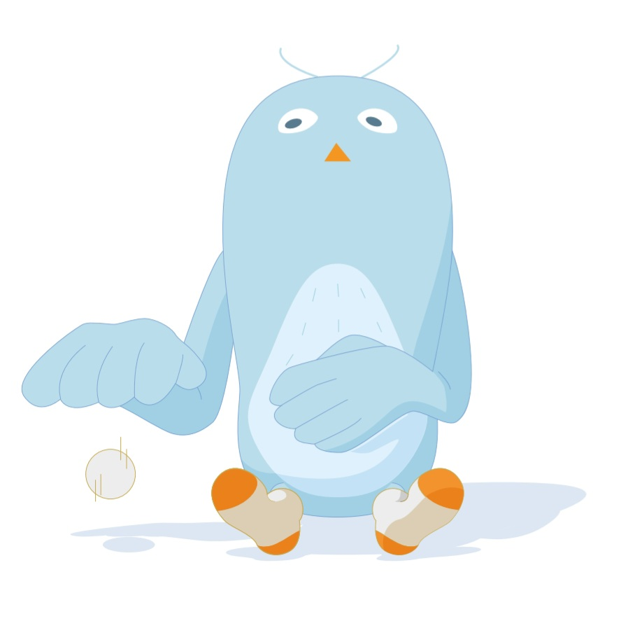

HAPPY BUDDY DAY !
00
:
00
pm
여행 성향 테스트 결과
여유 마스터
계획형 순간 관찰자

당신은 여행에서 철저한 계획을 세우되, 계획 안에서 여유를 찾고 순간을 즐기는 여행자입니다. 모든 일정을 계획하지만, 그 안에서 자연스럽게 발생하는 순간에 집중하며 편안하게 여행을 즐기죠. 액티비티 보다는 정적인인 활동을 선호하고, 여행 중 만나는 장소와 사람들을 편안하게 관찰하며 그 자체를 즐깁니다. 또한 사진보다는 그 순간을 느끼고 기억하는 데 더 집중하는 스타일입니다.
Tips
일기나 간단한 메모를 남기면 사진 없이도 여행에서 느꼈던 감정과 분위기를 오래 간직할 수 있어요.
독특한 인테리어를 가진 카페, 고급 호텔, 현지 문화를 배울 수 있는 공간 등 여행을 풍성하게 만들어줄 실내 장소를 찾아보세요.
Best Spots
네덜란드 암스테르담: 아름답고 평화로운 분위기를 느낄 수 있어요.
아이슬란드: 자연의 아름다움 속에서 느긋한 시간을 보낼 수 있습니다.
스위스 루체른: 고요한 호수와 산을 배경으로 여유롭게 여행할 수 있어요.